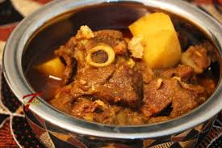

Mutabbal is a Levant dish found through out Lebanon, Palestine, Syria, Jordan and Egypt. It is a delicious and healthy dish, particulary for vegetarian. One could eat Mutabbal by dipping it in Pita bread or any other kind of bread, or one could eat it with a spoon. Many have Mutabbal as a starter, however, it could be a full meal, especially if accompanied by salad and pickles on the side. Mutabbal is made of roasted, peeled and mashed eggplant, blended with tahini, mashed garlic, salt and lemon juice. It is normally served with a dressing of extra virgin olive oil. In addition, many people may also eat it with mint, or may spray it with chopped parsely and sprinkle it with pomegranate seeds.
Ingredients
Eggplant
Tahini sauce
Salt
Garlic
Lemon juice
Parsley
Method
Roast the eggplant until the skin appears almost burnt and the eggplant begins to collapse
While the eggplant is cooking, smash the garlic and mix it with tahini sauce, salt and lemon juice. The quantities used depend on how many eggplants one is cooking, in addition how much of tahini, garlic and lemon one may like. So always taste, and if you think you may like more lemon, salt, garlic or tahini, go ahead and add some. Learning how to cook a new dish is an experiment at the beginning and a great experience when you get the passion and love.
Now, it is the time to add the mix in Step 2 to the cooked eggplant in Step 1, and mix all together. Smash the eggplant until it is a dip.
And the best ingredients in cooking Mutabbal and any dish for that matter are love and passion.
Always remember to enjoy the experience of cooking. It is an adventurous journey with plenty of ups and downs :)
Lamb Curry

Lamb curry is one delicious Indian dish with plenty of spices and flavor. It maybe served with Basmati rice or warm Naan bread. It is a traditional dish served throughout of India, however spices may differ from one region to another.
Ingredients
Lamb
Finally chopped onions
Garlic paste
Ginger paste
Turmeric powder
Paprika
Chili powder (optional)
Cumin powder
Coriander powder
All spice powder
Cardamoms
Bay leaves (أوراق الغار)
Small pieces of cinamon (قرفة)
Potato
Garam mashala powder (grind cardamom and cinnamon)
Green chillies
Salt
Oil
Method
Wash the meat and set aside until it is drained
In a pan, heat the oil. Add cardamom, bay leaves and cinnamon to the oil and fry for about 15-20 seconds until fragrant. Be careful not to burn them.
Add the sliced onions and saute the onions until they are slightly golden.
Add the ginger and garlic paste to the onions and fry for another 30 seconds
Add cumin, coriander, turmeric, paprika, chili, all spice powder and stir until the spices are fragrant.
Add a little water and cook in medium heat until the water evaporates and the oil separates from the spices
Add green chilis at this time if you like it more spicy.
Add the meat and stir until the meat is well coated with the spices. Cook the meat for about 10 minutes. Add enough water to the meat as you would like your gravy to be at the end of the cooking. Cover and cook the meat until it is half cooked.
Add the potatoes to the meat. And cook until the meat and the potatoes are fully cooked. Now sprinkle the garam masala and a few whole green chilies (for flavour and not heat) and cover and cook for another 3-5 minutes.
Spinach Rice
Spinach rice is a Mediterranean dish served in many parts of the middle east, particularly Lebanon and Palestine, Europe, particularly in Greece and Armenia. Yet it a simple dish to make, it is both healthy and delicious. It is a great dish for those who are vegetarian. It is usually served as an appetizer, however, if served with salad, it could be considered a full meal. Personally, I like to have it with green salad and salmon.
Ingredients
White or brown rice
Fresh Spinach
Garlic
Olive oil
Lemon juice
salt
Method
Wash the spinach and let it drain for about five minutes or so
In a pot, heat up the olive oil (watch out not to burn the oil). Then add the chopped garlic and the the chopped spinach. Cook for about 5-10 minutes until the spinach is soaked. Then squeeze some lemon, however, you may wait until the spinach rice is done. It is your option!
Add the rice to spinach, then add water and salt to taste. For every cup of rice, I usually add 3 cups of water. Cook until boil, then put heat to low, and cover the pot. Cook until all the water is soaked by the rice.